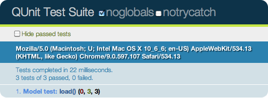
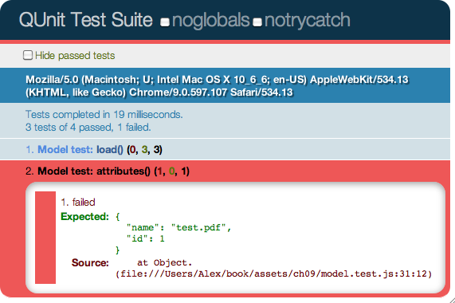
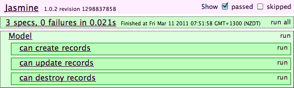

{% include JB/setup %}
{% raw %}
<div>
<div class="calibre7"></div><div class="book" title="Chapter 9. Testing and Debugging"><div class="book"><div class="book"><div class="book"><div class="calibre7"></div><h1 class="title1"><a id="testing-debugging" class="calibre1"></a>Chapter 9. Testing and Debugging</h1></div></div></div><p class="calibre3"><a id="index-887Q282KU1W" class="calibre1"></a><a id="I_indexterm9_d1e7980" class="calibre1"></a>All developers test, to some degree or another, when they’re
  programming. Even just running the code manually is a form of testing.
  However, what we’re going to cover here is automated testing in
  JavaScript—i.e., writing specific assertions that run automatically.
  Automated testing won’t eliminate bugs from your code, but it is a measure
  to effectively reduce the number of defects and to prevent older bugs from
  creeping back into the codebase. There are lots of great resources out there
  justifying and explaining different types of testing. So, rather than
  creating an inferior rehash of those, this chapter will focus on the
  specifics of testing in JavaScript as opposed to other languages.</p><p class="calibre3">Testing in JavaScript isn’t really ingrained into the culture, so many
  JavaScript developers don’t write any tests for their code. I think the main
  reason is that automated JavaScript testing is difficult—it doesn’t scale.
  Let’s take jQuery for example. The library has hundreds of unit tests and
  about 10 different test suites to simulate the various environments it’s
  expected to run in. Each test has to be run once in every suite. Now, take a
  look at the browsers jQuery supports:</p><div class="book"><ul class="itemizedlist"><li class="listitem"><p class="calibre3">Safari: 3.2, 4, 5, nightly</p></li><li class="listitem"><p class="calibre3">Chrome: 8, 9, 10, 11</p></li><li class="listitem"><p class="calibre3">Internet Explorer: 6, 7, 8, 9</p></li><li class="listitem"><p class="calibre3">Firefox: 2, 3, 3.5, 3.6, nightly</p></li><li class="listitem"><p class="calibre3">Opera: 9.6, 10, 11</p></li></ul></div><p class="calibre3">So, that’s 5 browsers <a id="I_indexterm9_d1e8006" class="calibre1"></a>with about 20 versions among them, and each suite needs to be
  run on every browser version. You can see how the amount of tests that have
  to be run is expanding exponentially, and I haven’t even gotten to platforms
  yet! It just doesn’t scale.</p><p class="calibre3">Obviously, jQuery is a special case, an example designed to highlight
  the problem. You probably won’t need to support half as many browsers as
  jQuery does, and you are not likely to have as many suites. However, you
  will have to choose which browsers your application will support, and then
  test for them.</p><p class="calibre3">Before we go any further, it’s worth looking at the browser landscape,
  as this ultimately dictates the limitations imposed upon web developers. The
  landscape changes so quickly that this analysis is likely to be out of date
  by the time you read this. The general trends, though, should remain the
  same.</p><p class="calibre3">Browser adoption rates really depend on how you measure them. They
  change markedly between countries and continents, usually depending on how
  Internet-savvy the population is. For example, here are the
  <span class="calibre1"><em class="calibre4">Statcounter.com</em></span> results for Europe in early
  2011:</p><div class="book"><ul class="itemizedlist"><li class="listitem"><p class="calibre3">Safari: 4%</p></li><li class="listitem"><p class="calibre3">Chrome: 15%</p></li><li class="listitem"><p class="calibre3">IE: 36%</p></li><li class="listitem"><p class="calibre3">Firefox: 37%</p></li><li class="listitem"><p class="calibre3">Opera: 2%</p></li></ul></div><p class="calibre3">The general trend is that IE usage is decreasing, while Firefox and
  Chrome usage is increasing. Older browsers like IE6 are now relics of the
  past, with a percentage share of a few points. Unless you’re developing for
  corporate or government clients with a lot of legacy users, you shouldn’t
  have to worry about supporting these ancient browsers.</p><p class="calibre3">As they say, “There are three kinds of lies: lies, damned lies, and
  statistics.” This applies doubly to browser stats. The stats for my blog,
  for example, show IE usage of about 5%, which is way below the national
  average. In other words, the traffic you’ll see is greatly affected by your
  specific audience. If your site caters to a technical, early-adopter crowd,
  you’ll get a high percentage of Firefox and Chrome users, whereas more
  mainstream sites will get visitors that better reflect the national average.
  When choosing which browsers your site needs to support, you should consider
  your specific audience rather than browser penetrations as a whole. However,
  as a rule of thumb, I generally test in the following browsers:</p><div class="book"><ul class="itemizedlist"><li class="listitem"><p class="calibre3">IE 8, 9</p></li><li class="listitem"><p class="calibre3">Firefox 3.6</p></li><li class="listitem"><p class="calibre3">Safari 5</p></li><li class="listitem"><p class="calibre3">Chrome 11</p></li></ul></div><p class="calibre3">If you don’t have stats for your existing services that show you which
  browsers your audience is using, you’ll have to make an educated guess based
  on your target audience. Once you’ve chosen which browsers you’re
  supporting, the next step is writing automated tests and making sure they
  pass in every supported browser.</p><div class="book" title="Unit Testing"><div class="book"><div class="book"><div class="book"><h1 class="title1"><a id="I_sect19_d1e8057" class="calibre1"></a>Unit Testing</h1></div></div></div><p class="calibre3"><a id="index-511B084TE4C" class="calibre1"></a><a id="index-561Q200CK1G" class="calibre1"></a>Manual testing <a id="I_indexterm9_d1e8070" class="calibre1"></a>is like integration testing, making sure that your
    application works from a high level. Unit testing is much more low level,
    ensuring that particular pieces of code behind the scenes are performing
    as expected. Unit testing is much more likely to reveal cross-browser
    issues, but it allows you to resolve them quickly, because you need to
    examine only small sections of code.</p><p class="calibre3">The other advantage to unit testing is that it paves the way for
    automation. We’ll cover this in more detail later in this chapter, but
    unit tests make it possible to set up a continuous integration server,
    running the application’s tests every time the code is committed. This is
    much quicker than running through your whole application manually, and
    making sure that changes to one piece of code aren’t having any side
    effects elsewhere in the application.</p><p class="calibre3">There are lots of JavaScript libraries out there for unit testing,
    each with pros and cons. We’re going to cover the most popular ones, but
    the general principles should apply to any you choose to use.</p><div class="book" title="Assertions"><div class="book"><div class="book"><div class="book"><h2 class="title3"><a id="id2928515" class="calibre12"></a>Assertions</h2></div></div></div><p class="calibre3"><a id="I_indexterm9_d1e8082" class="calibre1"></a><a id="I_indexterm9_d1e8089" class="calibre1"></a><a id="I_indexterm9_d1e8094" class="calibre1"></a>Assertions are at the heart of testing; they determine
      which tests pass or fail. Assertions are statements that indicate the
      expected result of your code. If the assertion is incorrect, the test
      fails, and you know that something has gone wrong.</p><p class="calibre3">For example, here’s the simple <code class="literal">assert()</code> function <a id="I_indexterm9_d1e8103" class="calibre1"></a><a id="I_indexterm9_d1e8106" class="calibre1"></a>we’ve been using for the examples throughout this
      book:</p><pre class="screen">var asset = function(value, msg) {
  if ( !value )
    throw(msg || (value + " does not equal true"));
};</pre><p class="calibre3">This takes a value and an optional message. If the value doesn’t
      evaluate to <code class="literal">true</code>, the assertion
      fails:</p><pre class="screen">// Assertion fails
assert( false );
assert( "" );
assert( 0 );</pre><p class="calibre3">JavaScript automatically type-converts <code class="literal">undefined</code>, <code class="literal">0</code>, and <code class="literal">null</code>
      to <code class="literal">false</code> during a Boolean check. In
      other words, the <code class="literal">assert</code> works for a <code class="literal">null</code> check, too:</p><pre class="screen">// If the statement is null, the assertion fails
assert( User.first() );</pre><p class="calibre3">Type conversion <a id="I_indexterm9_d1e8146" class="calibre1"></a>will really affect your testing, so it’s worth checking
      out some of the weird and wonderful ways JavaScript behaves when <a class="ulink" href="http://bonsaiden.github.com/JavaScript-Garden">converting
      types</a>.</p><p class="calibre3">Assert libraries<a id="I_indexterm9_d1e8157" class="calibre1"></a><a id="I_indexterm9_d1e8160" class="calibre1"></a> aren’t just limited to checking for the truth. Most
      libraries include a whole array of matchers, from comparing primitive
      objects to checking that a number is greater than another. They all
      include at least an <code class="literal">assertEqual()</code> function,<a id="I_indexterm9_d1e8169" class="calibre1"></a><a id="I_indexterm9_d1e8172" class="calibre1"></a> which lets you compare two values:</p><pre class="screen">var assertEqual = function(val1, val2, msg) {
  if (val1 !== val2)
    throw(msg || (val1 + " does not equal " + val2));
};

// Assertion passes
assertEqual("one", "one");</pre><p class="calibre3">All the testing libraries we’re going to cover consist of a set of
      assertions, with slightly differing APIs for defining them.</p></div><div class="book" title="QUnit"><div class="book"><div class="book"><div class="book"><h2 class="title3"><a id="id2928751" class="calibre12"></a>QUnit</h2></div></div></div><p class="calibre3"><a class="ulink" href="http://docs.jquery.com/Qunit">QUnit</a> <a id="I_indexterm9_d1e8190" class="calibre1"></a><a id="I_indexterm9_d1e8197" class="calibre1"></a><a id="I_indexterm9_d1e8202" class="calibre1"></a>is one of the most popular and well-maintained libraries,
      originally developed to test jQuery. So, how do you set up a QUnit
      testing environment? The first step is to download the <a class="ulink" href="https://github.com/jquery/qunit/zipball/master">project
      files</a> locally, and then create a static test runner page:</p><pre class="screen">&lt;!DOCTYPE html&gt;
&lt;html&gt;
&lt;head&gt;
    &lt;title&gt;QUnit Test Suite&lt;/title&gt;
    &lt;link rel="stylesheet" href="qunit/qunit.css" type="text/css" media="screen"&gt;
    &lt;script type="text/javascript" src="qunit/qunit.js"&gt;&lt;/script&gt;
    &lt;!-- include tests here... --&gt;
&lt;/head&gt;
&lt;body&gt;
    &lt;h1 id="qunit-header"&gt;QUnit Test Suite&lt;/h1&gt;
    &lt;h2 id="qunit-banner"&gt;&lt;/h2&gt;
    &lt;div id="qunit-testrunner-toolbar"&gt;&lt;/div&gt;
    &lt;h2 id="qunit-userAgent"&gt;&lt;/h2&gt;
    &lt;ol id="qunit-tests"&gt;&lt;/ol&gt;
    &lt;div id="qunit-fixture"&gt;test markup&lt;/div&gt;
&lt;/body&gt;
&lt;/html&gt;</pre><p class="calibre3">To create assertions, you should put them into a test case. For
      example, let’s create a test suite for that ORM we built in <a class="ulink" href="ch03.html" title="Chapter 3. Models and Data">Chapter 3</a>:</p><pre class="screen">test("load()", function(){
  var Asset = Model.setup();

  var a = Asset.init();
  a.load({
    local: true, 
    name: "test.pdf"
  });

  ok(a.local, "Load sets properties");
  equals(a.name, "test.pdf", "load() sets properties (2)");

  var b = Asset.init({
    name: "test2.pdf"
  });

  equals(b.name, "test2.pdf", "Calls load() on instantiation");
});</pre><p class="calibre3">We are defining a new case by calling <code class="literal">test()</code> and giving it the name of the test and
      the test callback (where the magic happens). Inside the callback we’ve
      got various assertions: <code class="literal">ok()</code> asserts
      that its first argument resolves to <code class="literal">true</code>, and <code class="literal">equals()</code> compares its two arguments. All the
      assertions take a last string argument, which is the name of the
      assertion, letting us easily see what passes and fails.</p><p class="calibre3">Let’s add that test to the page and give it a refresh, as shown in
      <a class="ulink" href="ch09.html#fig_9_1" title="Figure 9-1. QUnit test results">Figure 9-1</a>.</p><div class="book"><div class="figure"><a id="fig_9_1" class="calibre1"></a><div class="book"><div class="book"><a id="I_mediaobject9_d1e8238" class="calibre1"></a></div></div><p class="title4">Figure 9-1. QUnit test results</p></div></div><p class="calibre3">That’s pretty powerful! At a glance, we can see which tests have
      passed and failed—all it takes is a page refresh. We can now begin to
      test every browser our application supports, making sure our unit tests
      pass in all of them.</p><p class="calibre3">Tests are separated by the <code class="literal">module()</code> function,<a id="I_indexterm9_d1e8250" class="calibre1"></a><a id="I_indexterm9_d1e8253" class="calibre1"></a> which takes a name and options. Let’s clean up the first
      example by passing a <code class="literal">setup</code> option to
      <code class="literal">module()</code>, containing a callback that
      will be executed for every test that runs in the module. In this case,
      all our tests will need an <code class="literal">Asset</code>
      model, so we’ll create that in the <code class="literal">setup</code>:</p><pre class="screen">module("Model test", {
  setup: function(){
    this.Asset = Model.setup();
  }
});

test("load()", function(){
  var a = this.Asset.init();
  a.load({
    local: true, 
    name: "test.pdf"
  });

  ok(a.local, "Load sets properties");
  equals(a.name, "test.pdf", "load() sets properties (2)");

  var b = this.Asset.init({
    name: "test2.pdf"
  });

  equals(b.name, "test2.pdf", "Calls load() on instantiation");
});</pre><p class="calibre3">That’s a bit cleaner, and it will be useful when adding further
      tests. <code class="literal">module()</code> also takes a <code class="literal">teardown</code> option,<a id="I_indexterm9_d1e8283" class="calibre1"></a> which is a callback that will be executed after every
      test in the module. Let’s add another test to our suite:</p><pre class="screen">test("attributes()", function(){
  this.Asset.attributes = ["name"];

  var a = this.Asset.init();
  a.name = "test.pdf";
  a.id   = 1;

  equals(a.attributes(), {
    name: "test.pdf",
    id: 1
  });
});</pre><p class="calibre3">If you try this out, you’ll see that the test has failed, like the
      page shown in <a class="ulink" href="ch09.html#fig_9_2" title="Figure 9-2. Failing tests in QUnit">Figure 9-2</a>.</p><div class="figure"><a id="fig_9_2" class="calibre1"></a><div class="book"><div class="book"><a id="I_mediaobject9_d1e8296" class="calibre1"></a></div></div><p class="title4">Figure 9-2. Failing tests in QUnit</p></div><p class="calibre3">This is because the <code class="literal">equals()</code>
      function <a id="I_indexterm9_d1e8306" class="calibre1"></a><a id="I_indexterm9_d1e8309" class="calibre1"></a>uses the <code class="literal">==</code> comparison
      operator, which will fail for objects and arrays. Instead, we need to
      use the <code class="literal">same()</code> function,<a id="I_indexterm9_d1e8321" class="calibre1"></a><a id="I_indexterm9_d1e8325" class="calibre1"></a> which does a deep comparison, and our test suite will
      pass again:</p><pre class="screen">test("attributes()", function(){
  this.Asset.attributes = ["name"];

  var a = this.Asset.init();
  a.name = "test.pdf";
  a.id   = 1;

  same(a.attributes(), {
    name: "test.pdf",
    id: 1
  });
});</pre><p class="calibre3">QUnit includes a couple of other assertion types,<a id="I_indexterm9_d1e8335" class="calibre1"></a> such as <code class="literal">notEqual()</code> and
      <code class="literal">raises()</code>. For full examples of their
      usage, see <span class="calibre1"><em class="calibre4">assets/ch09/qunit/model.test.js</em></span> or the
      <a class="ulink" href="http://docs.jquery.com/Qunit#API_documentation">QUnit
      docs</a>.</p></div><div class="book" title="Jasmine"><div class="book"><div class="book"><div class="book"><h2 class="title3"><a id="id2929175" class="calibre12"></a>Jasmine</h2></div></div></div><p class="calibre3"><a class="ulink" href="http://pivotal.github.com/jasmine">Jasmine</a>
      <a id="index-072N458HL2S" class="calibre1"></a><a id="index-437U622GI1U" class="calibre1"></a><a id="index-530K662BP4A" class="calibre1"></a>is another popular testing library (and my personal
      favorite). Rather than unit tests, Jasmine has specs that describe the
      behavior of specific objects inside your application. In practice,
      they’re similar to unit tests, just with a different terminology.</p><p class="calibre3">Jasmine’s advantage is that it doesn’t require any other
      libraries, or even a DOM. This means it can run in any JavaScript
      environment, such as on the server side with <a class="ulink" href="http://nodejs.org">Node.js</a>.</p><p class="calibre3">As with QUnit, we need to set up a static HTML page that will load
      all the specs, run them, and display the result:</p><pre class="screen">&lt;!DOCTYPE HTML PUBLIC "-//W3C//DTD HTML 4.01 Transitional//EN"
  "http://www.w3.org/TR/html4/loose.dtd"&gt;
&lt;html&gt;
&lt;head&gt;
  &lt;title&gt;Jasmine Test Runner&lt;/title&gt;
  &lt;link rel="stylesheet" type="text/css" href="lib/jasmine.css"&gt;
  &lt;script type="text/javascript" src="lib/jasmine.js"&gt;&lt;/script&gt;
  &lt;script type="text/javascript" src="lib/jasmine-html.js"&gt;&lt;/script&gt;

  &lt;!-- include source files here... --&gt;
  &lt;!-- include spec files here... --&gt;
&lt;/head&gt;
&lt;body&gt;

  &lt;script type="text/javascript"&gt;
    jasmine.getEnv().addReporter(new jasmine.TrivialReporter());
    jasmine.getEnv().execute();
  &lt;/script&gt;

&lt;/body&gt;
&lt;/html&gt;</pre><p class="calibre3">Let’s take a look at writing some Jasmine specs. We’ll test some
      more of the ORM library from <a class="ulink" href="ch03.html" title="Chapter 3. Models and Data">Chapter 3</a>:</p><pre class="screen">describe("Model", function(){
  var Asset;

  beforeEach(function(){
    Asset = Model.setup();
    Asset.attributes = ["name"];
  });

  it("can create records", function(){
    var asset = Asset.create({name: "test.pdf"});
    expect(Asset.first()).toEqual(asset);
  });

  it("can update records", function(){
    var asset = Asset.create({name: "test.pdf"});

    expect(Asset.first().name).toEqual("test.pdf");

    asset.name = "wem.pdf";
    asset.save();

    expect(Asset.first().name).toEqual("wem.pdf");
  });

  it("can destroy records", function(){
    var asset = Asset.create({name: "test.pdf"});

    expect(Asset.first()).toEqual(asset);

    asset.destroy();

    expect(Asset.first()).toBeFalsy();
  });
});</pre><p class="calibre3">Specs are grouped into suites using the <code class="literal">describe()</code> function,<a id="I_indexterm9_d1e8394" class="calibre1"></a><a id="I_indexterm9_d1e8397" class="calibre1"></a> which takes the name <span class="calibre1">of
      <span class="calibre1">the</span></span><span class="calibre1"> spec and an
      anonymous function. In the example above, we’re using the <code class="literal">before</code></span><span class="calibre1"><code class="literal">Each()</code> function <a id="I_indexterm9_d1e8415" class="calibre1"></a><a id="I_indexterm9_d1e8418" class="calibre1"></a>as a setup utility to be run before every function.
      Jasmine also includes</span> a teardown function,<a id="I_indexterm9_d1e8425" class="calibre1"></a> <code class="literal">afterEach()</code><a id="I_indexterm9_d1e8432" class="calibre1"></a><a id="I_indexterm9_d1e8435" class="calibre1"></a>, which is called after every spec is run. We’re defining
      the variable <code class="literal">Asset</code> outside the
      <code class="literal">beforeEach()</code> function,<a id="I_indexterm9_d1e8447" class="calibre1"></a><a id="I_indexterm9_d1e8450" class="calibre1"></a> so it’s local to the suite and can be accessed inside
      each spec.</p><p class="calibre3">A spec begins with the <code class="literal">it()</code>
      function,<a id="I_indexterm9_d1e8461" class="calibre1"></a> which gets passed the name of the spec and the anonymous
      function containing the assertions. Assertions are created by passing
      <span class="calibre1">the relevant</span> value to the <code class="literal">expect()</code> function,<a id="I_indexterm9_d1e8473" class="calibre1"></a><a id="I_indexterm9_d1e8476" class="calibre1"></a> and then calling a matcher,<a id="I_indexterm9_d1e8483" class="calibre1"></a> such as one of the following:</p><div class="book"><dl class="book"><dt class="calibre8"><span class="calibre1"><code class="literal">expect(x).toEqual(y)</code></span></dt><dd class="calibre9"><p class="calibre3">Compares objects or primitives x and y, and passes if they
            are equivalent</p></dd><dt class="calibre8"><span class="calibre1"><code class="literal">expect(x).toBe(y)</code></span></dt><dd class="calibre9"><p class="calibre3">Compares objects or primitives x and y, and passes if they
            are the same object</p></dd><dt class="calibre8"><span class="calibre1"><code class="literal">expect(x).toMatch(pattern)</code></span></dt><dd class="calibre9"><p class="calibre3">Compares x to string or regular expression pattern, and
            passes if they match</p></dd><dt class="calibre8"><span class="calibre1"><code class="literal">expect(x).toBeNull()</code></span></dt><dd class="calibre9"><p class="calibre3">Passes if x is null</p></dd><dt class="calibre8"><span class="calibre1"><code class="literal">expect(x).toBeTruthy()</code></span></dt><dd class="calibre9"><p class="calibre3">Passes if x evaluates to true</p></dd><dt class="calibre8"><span class="calibre1"><code class="literal">expect(x).toBeFalsy()</code></span></dt><dd class="calibre9"><p class="calibre3">Passes if x evaluates to false</p></dd><dt class="calibre8"><span class="calibre1"><code class="literal">expect(x).toContain(y)</code></span></dt><dd class="calibre9"><p class="calibre3">Passes if array or string x contains y</p></dd><dt class="calibre8"><span class="calibre1"><code class="literal">expect(fn).toThrow(e)</code></span></dt><dd class="calibre9"><p class="calibre3">Passes if function <code class="literal">fn</code> throws exception e
            when executed</p></dd></dl></div><p class="calibre3">Jasmine includes lots of other matchers, and it even lets you
      <a class="ulink" href="http://github.com/pivotal/jasmine/wiki/Matchers">write your
      own</a> custom ones.</p><p class="calibre3"><a class="ulink" href="ch09.html#fig_9_3" title="Figure 9-3. Jasmine test results">Figure 9-3</a> shows an overview of running the
      Jasmine Test Runner using the example specs above.<a id="I_indexterm9_d1e8556" class="calibre1"></a><a id="I_indexterm9_d1e8557" class="calibre1"></a><a id="I_indexterm9_d1e8558" class="calibre1"></a><a id="I_indexterm9_d1e8559" class="calibre1"></a><a id="I_indexterm9_d1e8560" class="calibre1"></a></p><div class="book"><div class="figure"><a id="fig_9_3" class="calibre1"></a><div class="book"><div class="book"><a id="I_mediaobject9_d1e8564" class="calibre1"></a></div></div><p class="title4">Figure 9-3. Jasmine test results</p></div></div></div></div></div></div>

{% endraw %}

